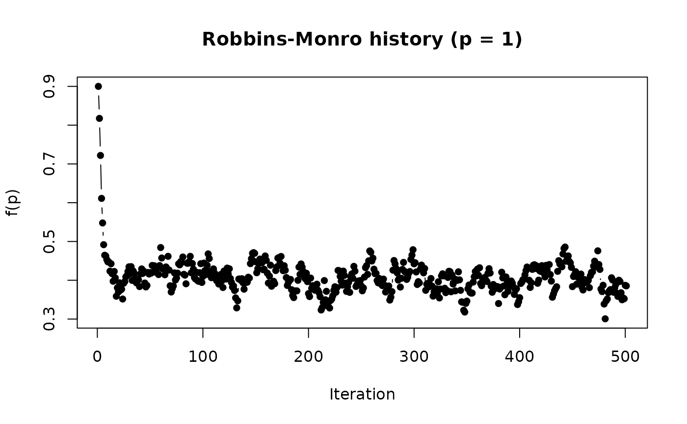
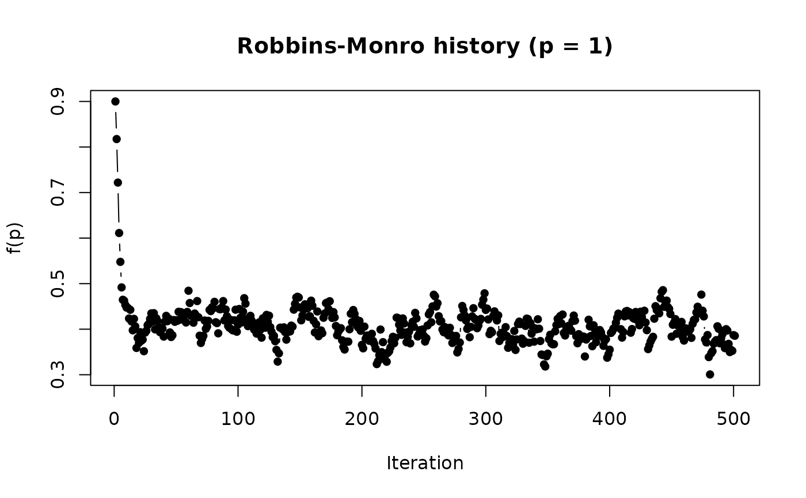

Function performs stochastic root solving for the provided f(x)
using the Robbins-Monro (1951) algorithm. Differs from deterministic
cousins such as uniroot in that f may contain stochastic error
components, where the root is obtained through the running average method
provided by noise filter (see also PBA).
Assumes that E[f(x)] is non-decreasing in x.
RobbinsMonro(
f,
p,
...,
Polyak_Juditsky = FALSE,
maxiter = 500L,
miniter = 100L,
k = 3L,
tol = 1e-05,
verbose = interactive(),
fn.a = function(iter, a = 1, b = 1/2, c = 0, ...) a/(iter + c)^b
)
# S3 method for class 'RM'
print(x, ...)
# S3 method for class 'RM'
plot(x, par = 1, main = NULL, Polyak_Juditsky = FALSE, ...)Arguments
- f
noisy function for which the root is sought
- p
vector of starting values to be passed as
f(p, ...)- ...
additional named arguments to be passed to
f- Polyak_Juditsky
logical; apply the Polyak and Juditsky (1992) running-average method? Returns the final running average estimate using the Robbins-Monro updates (also applies to
plot). Note that this should only be used when the step-sizes are sufficiently large so that the Robbins-Monro have the ability to stochastically explore around the root (not just approach it from one side, which occurs when using small steps)- maxiter
the maximum number of iterations (default 500)
- miniter
minimum number of iterations (default 100)
- k
number of consecutive
tolcriteria required before terminating- tol
tolerance criteria for convergence on the changes in the updated
pelements. Must be achieved onk(default 3) successive occasions- verbose
logical; should the iterations and estimate be printed to the console?
- fn.a
function to create the
acoefficient in the Robbins-Monro noise filter. Requires the first argument is the current iteration (iter), provide one or more arguments, and (optionally) the.... Sequence function is of the form recommended by Spall (2000).Note that if a different function is provided it must satisfy the property that \(\sum^\infty_{i=1} a_i = \infty\) and \(\sum^\infty_{i=1} a_i^2 < \infty\)
- x
an object of class
RM- par
which parameter in the original vector
pto include in the plot- main
plot title
References
Polyak, B. T. and Juditsky, A. B. (1992). Acceleration of Stochastic Approximation by Averaging. SIAM Journal on Control and Optimization, 30(4):838.
Robbins, H. and Monro, S. (1951). A stochastic approximation method. Ann.Math.Statistics, 22:400-407.
Spall, J.C. (2000). Adaptive stochastic approximation by the simultaneous perturbation method. IEEE Trans. Autom. Control 45, 1839-1853.
Examples
# find x that solves f(x) - b = 0 for the following
f.root <- function(x, b = .6) 1 / (1 + exp(-x)) - b
f.root(.3)
#> [1] -0.02555748
xs <- seq(-3,3, length.out=1000)
plot(xs, f.root(xs), type = 'l', ylab = "f(x)", xlab='x')
abline(h=0, col='red')
retuni <- uniroot(f.root, c(0,1))
retuni
#> $root
#> [1] 0.4054644
#>
#> $f.root
#> [1] -1.772764e-07
#>
#> $iter
#> [1] 4
#>
#> $init.it
#> [1] NA
#>
#> $estim.prec
#> [1] 6.103516e-05
#>
abline(v=retuni$root, col='blue', lty=2)
 # Robbins-Monro without noisy root, start with p=.9
retrm <- RobbinsMonro(f.root, .9)
retrm
#> [1] 0.4060382
plot(retrm)
# Same problem, however root function is now noisy. Hence, need to solve
# fhat(x) - b + e = 0, where E(e) = 0
f.root_noisy <- function(x) 1 / (1 + exp(-x)) - .6 + rnorm(1, sd=.02)
sapply(rep(.3, 10), f.root_noisy)
#> [1] -0.0450792687 -0.0597576555 -0.0353333253 -0.0431351552 -0.0271934686
#> [6] -0.0664189399 -0.0028712123 0.0006712352 -0.0236366965 -0.0384312951
# uniroot "converges" unreliably
set.seed(123)
uniroot(f.root_noisy, c(0,1))$root
#> [1] 0.3748233
uniroot(f.root_noisy, c(0,1))$root
#> [1] 0.3785736
uniroot(f.root_noisy, c(0,1))$root
#> [1] 0.4954932
# Robbins-Monro provides better convergence
retrm.noise <- RobbinsMonro(f.root_noisy, .9)
retrm.noise
#> [1] 0.401403
plot(retrm.noise)
# Robbins-Monro without noisy root, start with p=.9
retrm <- RobbinsMonro(f.root, .9)
retrm
#> [1] 0.4060382
plot(retrm)
# Same problem, however root function is now noisy. Hence, need to solve
# fhat(x) - b + e = 0, where E(e) = 0
f.root_noisy <- function(x) 1 / (1 + exp(-x)) - .6 + rnorm(1, sd=.02)
sapply(rep(.3, 10), f.root_noisy)
#> [1] -0.0450792687 -0.0597576555 -0.0353333253 -0.0431351552 -0.0271934686
#> [6] -0.0664189399 -0.0028712123 0.0006712352 -0.0236366965 -0.0384312951
# uniroot "converges" unreliably
set.seed(123)
uniroot(f.root_noisy, c(0,1))$root
#> [1] 0.3748233
uniroot(f.root_noisy, c(0,1))$root
#> [1] 0.3785736
uniroot(f.root_noisy, c(0,1))$root
#> [1] 0.4954932
# Robbins-Monro provides better convergence
retrm.noise <- RobbinsMonro(f.root_noisy, .9)
retrm.noise
#> [1] 0.401403
plot(retrm.noise)
 # different power (b) for fn.a()
retrm.b2 <- RobbinsMonro(f.root_noisy, .9, b = .01)
retrm.b2
#> [1] 0.385524
plot(retrm.b2)

# use Polyak-Juditsky averaging (b should be closer to 0 to work well)
retrm.PJ <- RobbinsMonro(f.root_noisy, .9, b = .01,
Polyak_Juditsky = TRUE)
retrm.PJ # final Polyak_Juditsky estimate
#> [,1]
#> [1,] 0.4077852
plot(retrm.PJ) # Robbins-Monro history
plot(retrm.PJ, Polyak_Juditsky = TRUE) # Polyak_Juditsky history
# different power (b) for fn.a()
retrm.b2 <- RobbinsMonro(f.root_noisy, .9, b = .01)
retrm.b2
#> [1] 0.385524
plot(retrm.b2)

# use Polyak-Juditsky averaging (b should be closer to 0 to work well)
retrm.PJ <- RobbinsMonro(f.root_noisy, .9, b = .01,
Polyak_Juditsky = TRUE)
retrm.PJ # final Polyak_Juditsky estimate
#> [,1]
#> [1,] 0.4077852
plot(retrm.PJ) # Robbins-Monro history
plot(retrm.PJ, Polyak_Juditsky = TRUE) # Polyak_Juditsky history